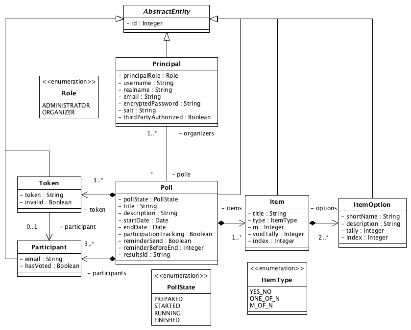
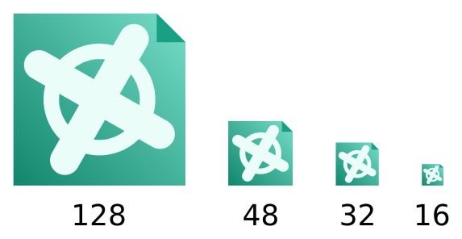
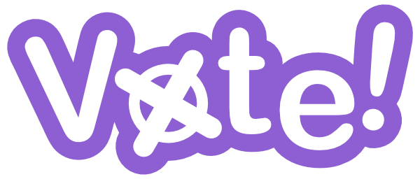

- Table of Contents
- Details & Features
- JavaEE Impressions
- Bonus content
- Screenshots
- Vote! Git repo
Vote! is the result of my first experience with JavaEE and should not be confused with my project »Vote« (without exclamation mark) which I did back in high school in the winter holidays 2008 / early 2009 - its also very interesting, click here to read more about Vote.
Together with a colleague ( Daniel Vivas Estevao) we built this Web App for a JavaEE course at university as the final examination. It basically tries to provide a safe way to perform polls or elections electronically over a Web App. The »About Vote!« page describes the intention as follows:
Vote! is a program for creating and executing online polls. Once you have signed up as an organizer you can create polls with an arbitrary number of questions, each one consisting of an arbitrary number of options. After adding all participants to your poll, they automatically receive an invitation e-mail. At the end of the poll its results can be viewed online.
Yet the Vote!-system does not allow to show results before a poll is finished. Additionally, not even a Vote!-administrator can trace back which participant casted a certain vote.
Vote! has been developed at the University of Koblenz-Landau, Germany within the scope of the course "JavaEE Web-Applikationen".
Vote! Version 1.84 »Afterlife« © 2016 Daniel Vivas Estevao, Maximilian Strauch. Built and designed by hand with ❤.
Features
The environment of polls and especially »official« polls is very rough since the threat of tampering a poll is much higher when performing it electronically than manually with paper ballots. We payed therefore special attention to possible attack points and integrated the following features to counteract the threats:
- Browser back button disabled - It is important to disable the back button to prevent anybody from travelling back from the poll finished page to the poll page with the selected options. Vote! uses different workarounds and methods (e.g. no cache) to prevent this, but a 100% secure solution cannot be provided. Update (2016): another idea to prevent showing the selected options is to make the poll page work without HTML forms but with Javascript.
- No auto complete for the token field - This is very simple: the token field gets a random name which is generated for every request. Therefore the browser won't show any auto complete hints. Furthermore the
autocomplete="off"is also used. But it depends on the browser if it is used or not. - HTTPS connections - A JavaEE filter is used (implemented by class
HttpToHttpsFilterin packagede.vote.web.filter) to always redirect unsecure connections to secure encrypted HTTPS connections. - UUIDs as random tokens - Whenever a random token is needed (e.g. as a participation token which is send via mail to participants) an UUID is used because it adds additional security. The probability of generating two same UUIDs is 0.00000000000004% when generating 236 = 68,719,476,736 UUIDs (source).
- Hashed and salted passwords inside the database - I guess it is pretty standard to hash and salt passwords when storing them in the database. And Vote! does it .
- Admins have not the total power - Even an admin user cannot see the results of a poll before it is finished and cannot see the results for polls with three or less participations. Therefore nobody can be influenced before the poll is finished or the selections of a participant can be traced back.
This are only some of the features of Vote!. You can read all the features in the documentation (only in German) in the git repo here and find the requirements for the project here.
Vote! has been designed completely by »hand«, meaning that the artwork and CSS styling is a custom job for this project (see further information here).
The data model used for Vote!. Vote! uses JavaDB (Derby) through the JPA (Java Persistence API) with EclipseLink as implementation. An object based approach is really nice since I normally work with relational databases.
(My) JavaEE Impressions
From the experiences I gathered during this course I can say that JavaEE is an awesome piece of technology. It provides so many features which can be used through annotations and injection with the help of JNDI. Since I was really amazed by this technology I did two other projects with JavaEE in the same year:
- JavaEE Pinboard - My old computer science (from high school) teacher and I came up with the idea of introducing him and his colleagues to JavaEE since they really wanted to see it in action. Therefore I created a simple demo project which gives a basic insight into creating applications with JavaEE and held a presentation to teach them the basics.
- JavaEE OnClick invocation - Later on I was consulted by another colleague if it is possible to invoke a method in the backend if a form element (in this case a checkbox) is changed. I came up with a simple Javascript driven solution which I published in the shown repo.
After this project I did many projects which involved a web-based interface but never used JavaEE again. Therefore one could ask: why is that? You wrote that JavaEE is such an »awesome« technology.
The reason is pretty simple: the world runs on MySQL and PHP. I got introduced to MySQL, HTML, PHP, Javascript and CSS back in 2006 and experimented around with Microsoft FrontPage, Microsoft Word HTML export, MHT files and HTA files in 2001+ to get involved in »web« development (if you consider dealing with MS FrontPage as »web« development).
Therefore it is for me (nowadays) much faster to use these particular technologies. PHP is much simpler to setup, much simpler to get started and even simpler to configure. Additionally most of the web-hosting providers do not provide any JavaEE support. But PHP, MySQL and Apache or Lighttpd are supported by most web-hosting providers. Therefore it is much more viable to use this technologies.
And if you want to run your JavaEE web application on a Raspberry Pi it is a bit on the slow side compared to a plain old PHP application .
Bonus content - the design process
I have many more documents residing on the hard drive related to this project than the Git repo provides. Back in the time when we worked on this project one of my tasks was to come up with a nice UI. I don't know why but using Bootstrap was no option for me.
Before I came up with the final design (shown in the screenshots, next section) I created a rapid (!) prototype with a design I invented for Vote! based on the Wordpress admin interface design (back in 2014). Checkout the following documents:
- A working mockup of Vote! Many links and functions are working and you can try them out and discover Vote! or at least how we thought that Vote! will look like.
- An overview over the style developed with different components.
Please note ... that this is an early prototype and mockup - the source code looks really horrible since I wanted to get a visual impression to discuss whether this UI is fine.
I finally got inspired by Bootstrap and redesigned everything to give it a much fresher look. I also switched from a fixed-width body to a design which fills the entire page. And also the logo went through different design iterations:

The initial version of the Vote! logo with a cross as visualisation.
Click here for the vector version of this logo.
{kind=link}
A later version based on Mozillas logo with some nice shadows.

The final logo for Vote! which includes the lettering and the first logo with a nice purple background. It is only an incident that Bootstrap uses also a purple background - we took a vote in our team for a color and came up with this color. The vector version is available here and a Desktop background image can be downloaded here.
{kind=link}
{kind=link}
Screenshots of Vote!
In the following you can you can get an impression of Vote! if you do not want to download and setup all the stuff. But if you want you can take a look at the documentation (here) which contains a step-by-step guidance on how to setup Vote!.
{kind=link}
{kind=link}
{kind=link}
{kind=link}
{kind=link}
{kind=link}
{kind=link}
{kind=link}
{kind=link}
{kind=link}